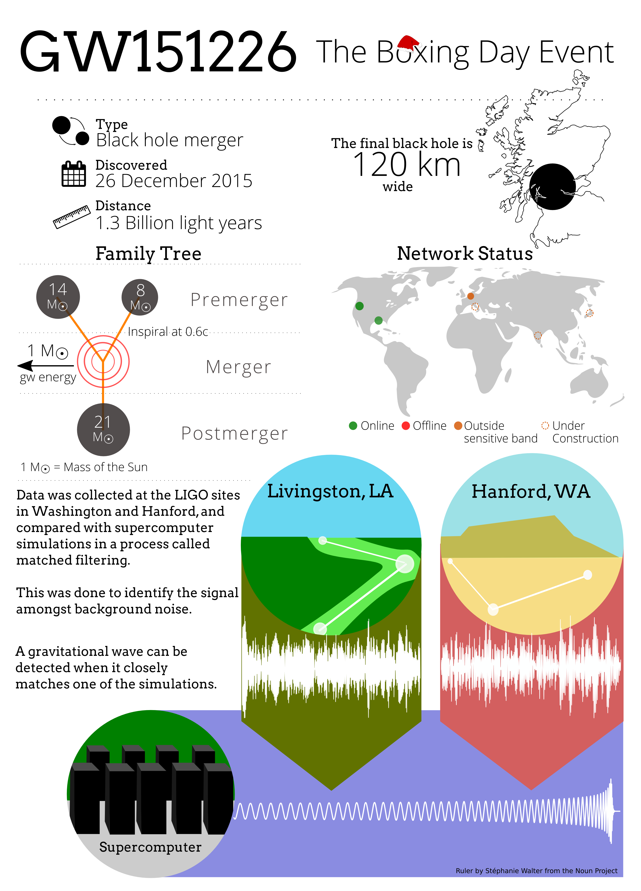
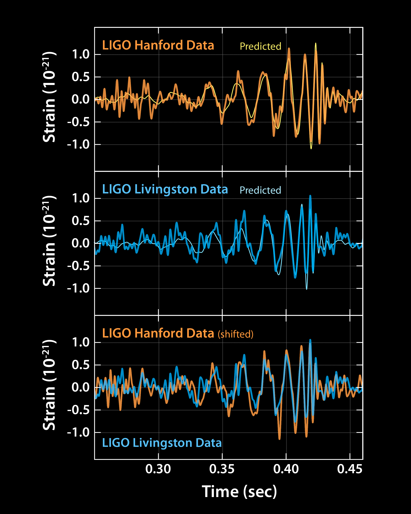
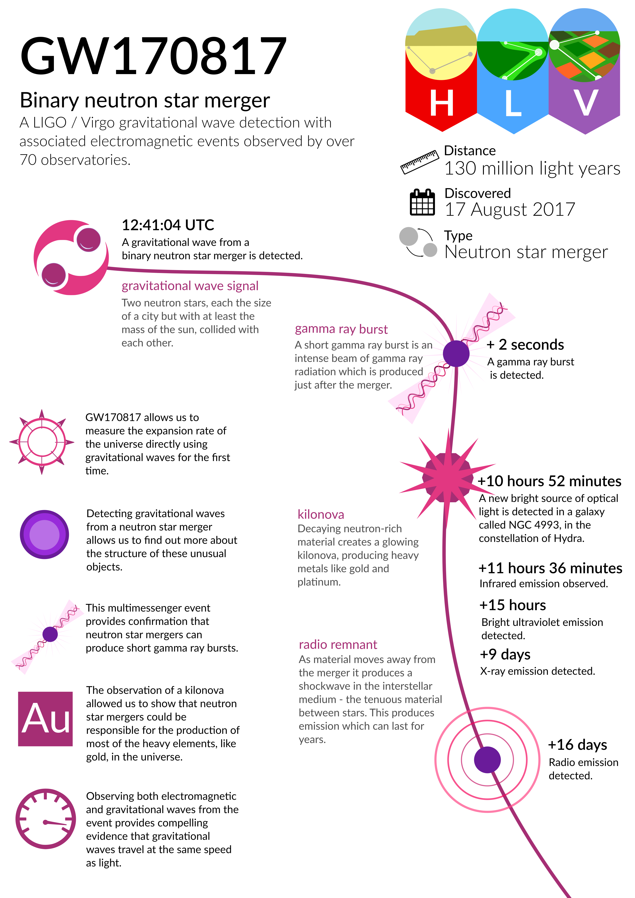

🚀 Minnie-Astrophysics
Listening to the Universe with Python
From black-hole mergers to audio playback: analyze and literally “hear” gravitational-wave signals with Python.

🌌 Project Overview
This project processes real gravitational-wave data from landmark cosmic events, combining signal processing, visualization, and sonification.
- GW150914: first direct detection of a binary black-hole merger
- GW170817: first binary neutron-star merger with electromagnetic counterpart
Core idea: turn abstract spacetime strain into a visible and audible experience.
✨ Portfolio Highlights
- Real scientific data from the LIGO Open Science Center (GWOSC)
- Frequency-domain analysis with ASD and noise-peak identification
- Signal cleaning via bandpass + notch filtering (60/120/180 Hz)
- Q-transform time-frequency visualization for chirp patterns
- Multi-detector alignment between H1 and L1 (6.9 ms delay)
- WAV generation for gravitational-wave audio playback

🧠 Physical Context
Gravitational waves are a key prediction of General Relativity:
- Accelerating massive systems (e.g., black holes) generate spacetime ripples
- Typical waveform structure: inspiral → merger → ringdown
- Increasing frequency and amplitude create the characteristic “chirp”
🧪 Analysis Pipeline
GWOSC data → spectral analysis → filtering → time-domain analysis → time-frequency analysis → detector alignment → audio generation
- 1) Fetch strain data from Hanford (H1) and Livingston (L1)
- 2) Compute ASD and identify line-noise peaks
- 3) Apply bandpass and notch filters
# Bandpass filter for GW band bp = filter_design.bandpass(50, 250, sample_rate) # Notch filters for power-line harmonics notches = [filter_design.notch(f, sample_rate) for f in (60, 120, 180)]
- 4) Compare pre/post filtering in the time domain
- 5) Use Q-transform to visualize chirp evolution
- 6) Correct delay (6.9 ms) and phase-align H1 vs L1
- 7) Normalize and export WAV for listening
📊 Key Outputs
- Amplitude Spectral Density (ASD) plots
- Before/after filtering comparisons
- Q-transform spectrograms
- Cross-detector alignment diagnostics
- Gravitational-wave audio files

🎧 Hear the Universe
These events are not only visualizable but also audible. The rising chirp corresponds to compact objects inspiraling rapidly before final merger.
Tip: embed an audio player in GitHub Pages for a stronger project demo.
🗂️ Project Structure
Minnie-Astrophysics/ ├── src/ # processing and analysis modules ├── notebooks/ # Jupyter workflows ├── audio/ # generated GW audio ├── results/ │ ├── plots/ # visual outputs │ └── comparisons/ # detector comparison results ├── requirements.txt └── README.md
⚙️ Tech Stack
- Python
- GWPy
- NumPy / SciPy
- Matplotlib
🚀 Quick Start
git clone https://github.com/minnie-0923/Minnie-Astrophysics.git cd Minnie-Astrophysics pip install -r requirements.txt jupyter notebook notebooks/GW150914_Analysis.ipynb
📈 Why This Project Stands Out
- Real scientific data with an end-to-end reproducible workflow
- Strong balance of signal processing and physical interpretation
- Dual communication modality: plots + audio
- Converts complex data into an intuitive user experience
🙏 Inspiration
Inspired by ASTRON1221 and expanded with sonification, multi-detector correlation, and a more complete processing pipeline.